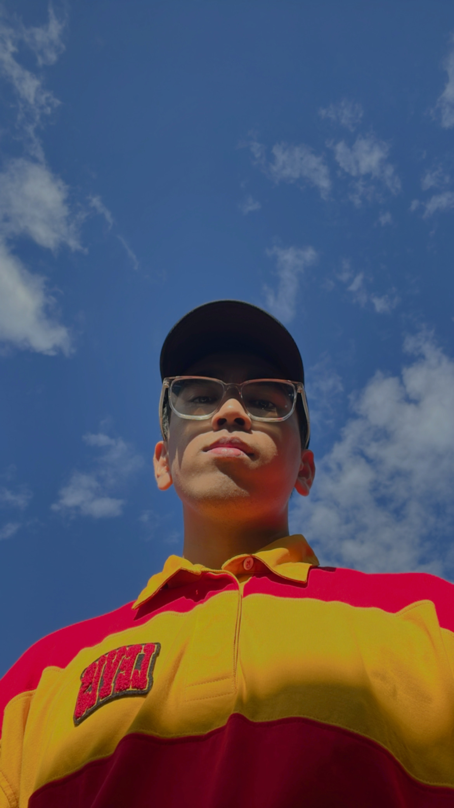
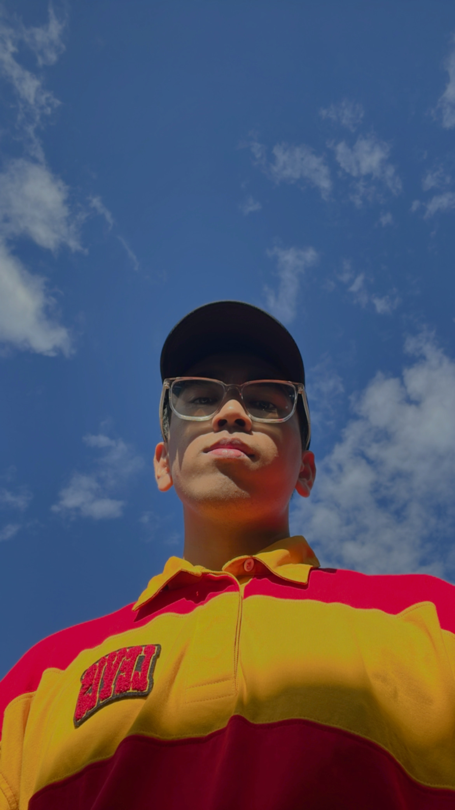

ABOUT ME
 

This is the story of Nabil, a young man who undertook the challenge of pursuing his degree while carrying the hopes of his family as the youngest child and the last hope for their aspirations.
Nabil grew up in a tight-knit family where he was not only the youngest sibling but also a cherished figure among his nine nephews, who looked up to him with admiration and respect.
From an early age, Nabil understood the weight of responsibility placed upon him.
His family, having faced their share of challenges and setbacks, pinned their hopes on Nabil to succeed academically and pave the way for a brighter future.
This expectation instilled in him a deep sense of purpose and determination to excel in his studies.